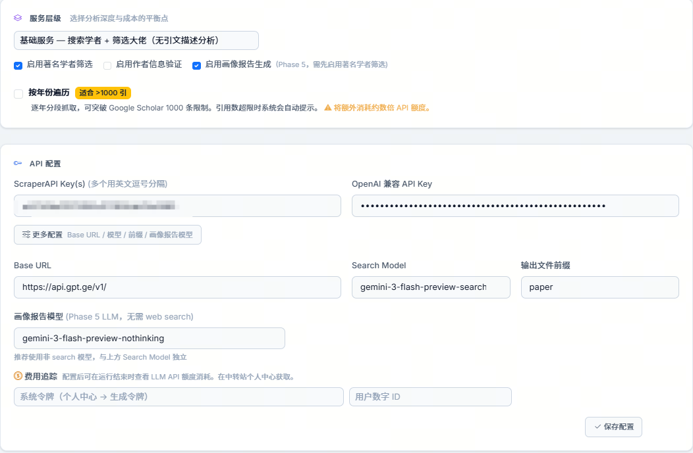
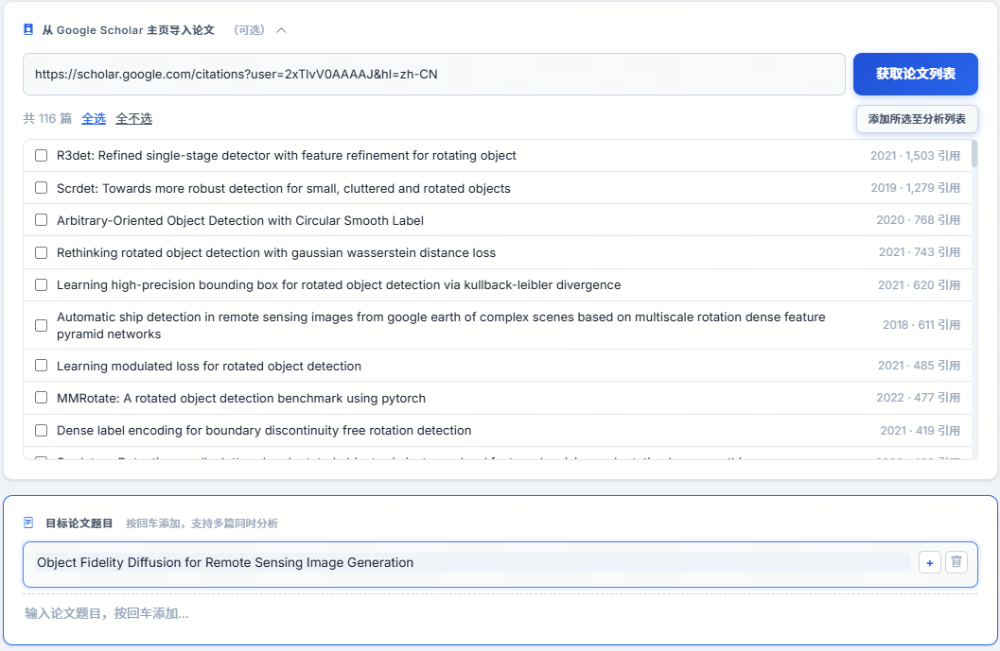

Spark 项目指南（Guidelines）
基于项目源码与 README 的系统化文档，强调快速上手、配置边界、接口能力和稳定运行策略。
1. 文档定位与适用范围
本指南面向三类用户：
- 使用者：希望快速跑通论文被引画像分析；
- 维护者：希望理解配置、阶段流程、故障处理与成本控制；
- 开发者：希望扩展接口、替换模型、调整抓取与报告链路。
文档内容覆盖 Quick Start、版本演进、关键设置、API 支持、输出产物、排障与维护建议。
2. 项目剖析（架构与流程）
2.1 五阶段流水线
核心执行逻辑位于 citationclaw/app/task_executor.py，标准流程如下：
- Phase 1引用抓取：基于 ScraperAPI 抓取 Google Scholar 引用列表；
- Phase 2作者检索：调用 OpenAI 兼容模型检索作者信息与头衔；
- Phase 3结果导出：导出 Excel / JSON，并生成大佬学者专门表；
- Phase 4引文描述（可选）：逐篇（或按范围）提取引用原句与位置；
- Phase 5画像报告（可选）：生成可直接分享的 HTML Dashboard。
项目支持“题目直接输入 + Google Scholar 主页批量导入”两种入口，并支持多论文与别名归并。
2.2 前端结构
- 模板：citationclaw/templates/*.html（首页、任务、配置、结果）；
- 脚本：citationclaw/static/js/main.js 与 websocket.js；
- 交互特性：实时日志、阶段进度、年份遍历弹窗、内置 UI 助手聊天窗口。
2.3 后端结构
- Web 框架：FastAPI（citationclaw/app/main.py）；
- 配置中心：Pydantic 配置模型（config_manager.py）；
- 核心模块：抓取器、作者检索器、引文检索器、导出器、Dashboard 生成器。
2.4 数据与产物结构
新流程默认输出到时间戳目录：
data/result-YYYYMMDD_HHMMSS/
paper1_citing.jsonl
paper1_authors.jsonl
merged_authors.jsonl
paper_results.xlsx
paper_results_all_renowned_scholar.xlsx
paper_results_top-tier_scholar.xlsx
paper_results_with_citing_desc.xlsx
paper_results.json
paper_dashboard.html3. 环境要求
- Python：3.10+（推荐 3.12）；
- 系统：Linux / macOS / Windows；
- 网络：需访问 Google Scholar、ScraperAPI、OpenAI 兼容服务端点；
- 依赖管理：项目使用 pyproject.toml 与 requirements.txt。
4. 安装与 Quick Start（首次使用）
4.1 pip 安装（推荐）
pip install citationclaw
citationclaw
# 指定端口
citationclaw --port 80804.2 源码运行（开发者）
git clone https://github.com/VisionXLab/Spark.git
cd Spark
pip install -r requirements.txt
python start.py
# 或
python start.py --port 80804.3 启动参数
| 参数 | 默认值 | 说明 |
|---|---|---|
| --host | 0.0.0.0 | 监听地址 |
| --port | 8000 | 监听端口 |
| --no-browser | False | 启动后不自动打开浏览器 |
以下流程按“第一次使用”设计，默认你还没有任何本地配置。
4.4 API 配置建议（按界面图示）

- 启动服务后，第一步先填写 ScraperAPI Key（可多个，逗号分隔）与 OpenAI 兼容 API Key；
- Search Model 不用改，保持 gemini-3-flash-preview-search（当前效果最好）；
- 其他配置先保持默认；
- 点击“保存配置”。
4.5 首次论文选择建议

- 启动后先输入目标论文标题；
- 首次测试建议选 citation < 10 的论文，便于快速跑通全流程；
- 也支持一次输入多篇论文，但首次不建议太多，避免调试复杂度和成本上升。
4.6 服务层级建议（首次）
在“服务层级”中优先选择 基础服务：
- 仅搜索学者 + 筛选大佬；
- 成本较低、速度较快，适合首轮验证配置是否正确。
4.7 运行期注意事项
- 完成 API 配置与论文输入后，点击“开始分析”；
- 过程中请开启科学上网，保证 Scholar 与 API 网络访问稳定；
- 请耐心等待，citation < 10 的论文通常几分钟可完成检索；
- 分析完成后下载并打开 paper_dashboard.html 查看结果。
若作者信息质量异常，优先检查 Search Model 是否支持实时 web search；模型不具备检索能力时容易出现幻觉内容。
5. 关键配置指南
5.1 API 与模型配置
| 配置项 | 是否必填 | 说明 |
|---|---|---|
| scraper_api_keys | 是 | 抓取 Google Scholar，建议 3 个以上轮换 |
| openai_api_key | 是 | OpenAI 兼容密钥 |
| openai_base_url | 建议 | API 基础地址（默认 https://api.gpt.ge/v1/） |
| openai_model | 是 | Search 模型，用于作者检索/引文检索，需支持 web search |
| dashboard_model | 建议 | 报告分析模型（可无需 web search） |
5.2 服务层级配置
内置预设在 SERVICE_TIER_PRESETS：
- basic：学者搜索 + 大佬筛选，不做引文描述分析；
- advanced：仅对院士/Fellow 相关施引论文做引文描述；
- full：对全部施引论文做引文描述（最完整，成本最高）。
5.3 稳定性与续跑配置
- enable_year_traverse：按年份遍历，突破 1000 条限制；
- resume_page_count：中断后断点续爬页码；
- retry_max_attempts + retry_intervals：统一重试策略；
- scraper_session：会话保持，缓解不同数据中心返回不一致；
- scraper_geo_rotate：重试时轮换国家节点（需相应套餐支持）。
5.4 成本控制配置
- parallel_author_search：并行度越高，速度越快但瞬时成本更高；
- scraper_premium / scraper_ultra_premium：稳定性更高但积分成本显著上升；
- api_access_token + api_user_id：启用运行前后 LLM 额度差值追踪。
5.5 质量与调试配置
- enable_author_verification：对作者信息做真实性核验；
- debug_mode：保存每页 HTML 与解析详情到 debug/；
- test_mode：使用 test/mock_author_info.jsonl 跳过真实 API 调用；
- enable_dashboard：是否生成最终 HTML 报告。
6. API 支持与接口清单
6.1 外部服务支持
- ScraperAPI：用于 Scholar 页面抓取，支持普通 / Premium / Ultra Premium；
- OpenAI 兼容 API：用于作者检索、引文描述、报告分析、聊天问答；
- Web Search 能力检测：通过 /api/test_openai 进行测试。
6.2 内部 REST/WebSocket 接口
| 接口 | 方法 | 用途 |
|---|---|---|
| /api/config | GET/POST | 读取/保存配置 |
| /api/presets | GET | 获取服务层级预设 |
| /api/run | POST | 按论文标题启动全流程 |
| /api/scholar/papers | POST | 爬取 Scholar 主页论文列表 |
| /api/task/start | POST | 仅执行阶段 1 |
| /api/task/continue | POST | 续执行阶段 2/3 |
| /api/task/import | POST | 导入历史抓取 JSONL |
| /api/task/status | GET | 查看运行状态 |
| /api/task/cancel | POST | 取消任务 |
| /api/task/year-traverse-respond | POST | 响应年份遍历弹窗选择 |
| /api/results/list | GET | 列出结果文件 |
| /api/results/view/{path} | GET | 在线查看 HTML 报告 |
| /api/results/download/{path} | GET | 下载结果文件 |
| /api/chat/ui | POST | 前端使用助手（流式） |
| /api/chat/report | POST | 报告问答（含自动检索判定） |
| /api/quota/check | GET | 查询 LLM 额度 |
| /ws | WebSocket | 推送日志、进度、阶段事件 |
7. 输出产物说明
8.1 标准产物
- *_results.xlsx：全量结构化结果；
- *_results_all_renowned_scholar.xlsx：所有知名学者；
- *_results_top-tier_scholar.xlsx：院士/Fellow 等顶层学者；
- *_results_with_citing_desc.xlsx：含引用原句结果；
- *_results.json：JSON 输出；
- *_dashboard.html：最终可视化画像报告。
8.2 可复用机制
- 作者信息缓存：跨运行复用，降低重复查询成本；
- 引文描述缓存：重复文献命中缓存，减少 LLM 调用；
- 历史导入：支持从已有 JSONL 跳过阶段 1。
8. 运行与运维建议
9.1 生产可用默认值建议
- 服务层级：先 basic 验证链路，再切换 advanced/full；
- 并行度：parallel_author_search=3~8（按额度与稳定性调节）；
- 重试：retry_max_attempts=3、retry_intervals=5,10,20；
- 超高被引论文：建议开启 enable_year_traverse。
9.2 成本与速度平衡
- 速度优先：提高并行度，但同时准备更多 Key 与更高额度；
- 成本优先：先跑 basic，不做 phase 4 深挖；
- 质量优先：开启作者校验与调试模式（耗时增加）。
9. 常见问题与排查
| 问题 | 现象 | 排查建议 |
|---|---|---|
| 作者信息明显不准 | 头衔、机构、引用量偏差大 | 确认 Search Model 支持 web search；必要时启用 enable_author_verification |
| ScraperAPI 频繁失败 | 抓取中断、页面异常 | 增加 key 数量、检查余额、提高重试间隔；必要时启用 premium/session |
| 引用超 1000 条不完整 | 抓取停在约 100 页 | 开启 enable_year_traverse |
| 任务中断需要继续 | 中途退出或被阻断 | 设置 resume_page_count 后重启任务 |
| 报告未生成 | 没有 dashboard 文件 | 检查 enable_dashboard，以及前置数据是否成功生成 |
10. 版本更新历史
| 日期 | 版本 | 变更 |
|---|---|---|
| 2026-03-14 | v1.0.4 | 界面交互优化，强化服务分层（基础/进阶/全面） |
| 2026-03-12 | v1.0.3 | 支持 PyPI 一行安装，自动打开浏览器，跨平台运行 |
| 2026-03-12 | v1.0 | 首次公开发布：批量导入、多层级分析、断点续爬、缓存复用、HTML 报告 |
维护时建议同步统一版本号来源（例如 pyproject.toml、citationclaw/__init__.py、FastAPI app version）。
11. 已知事项与后续建议
12.1 已知事项
- Google Scholar 存在天然反爬与结果上限，需结合重试与年份遍历策略；
- 不同数据中心可能导致页面不一致，项目已实现 session 与国家轮换补救；
- 模型质量与检索能力强相关，Search 模型选型直接影响准确性。
12.2 后续建议
- 补充 docs/guidelines.html 到主页入口，便于新用户发现；
- 将配置项按“必填/推荐/高级/实验”分层展示，降低上手门槛；
- 引入固定测试数据回归（test_mode）与 API 兼容性自动体检。
本项目仅用于学术研究与学习，请遵守 Google Scholar 与第三方 API 服务条款，避免高频违规抓取。